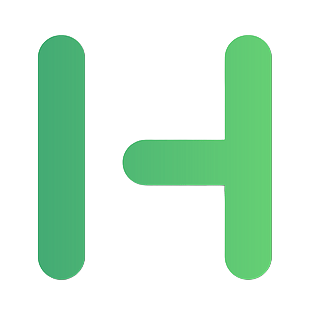
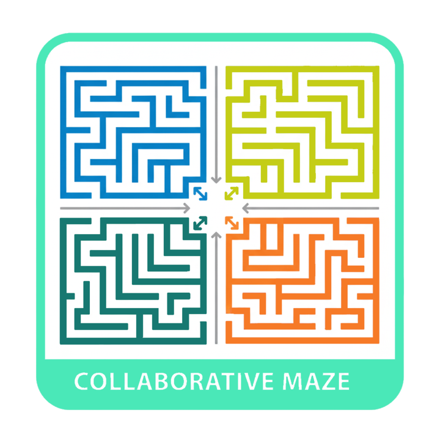
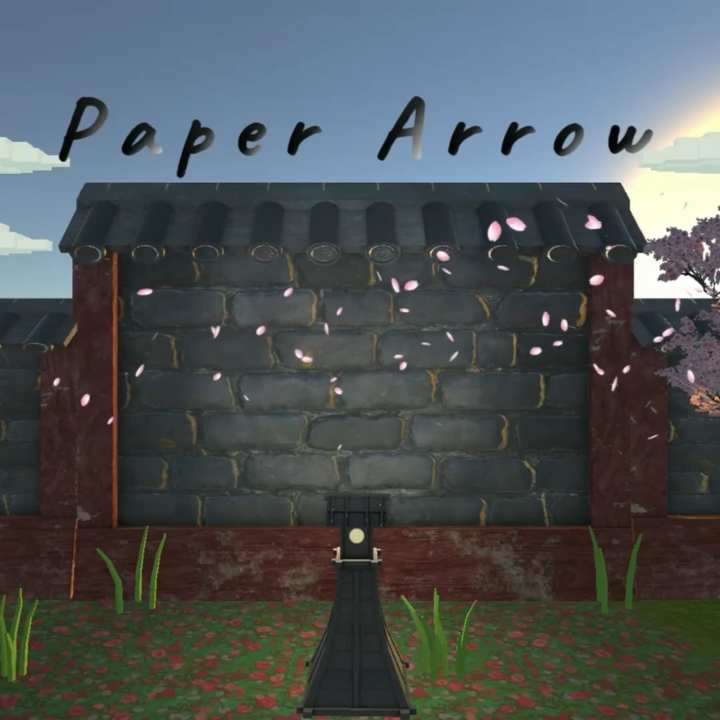
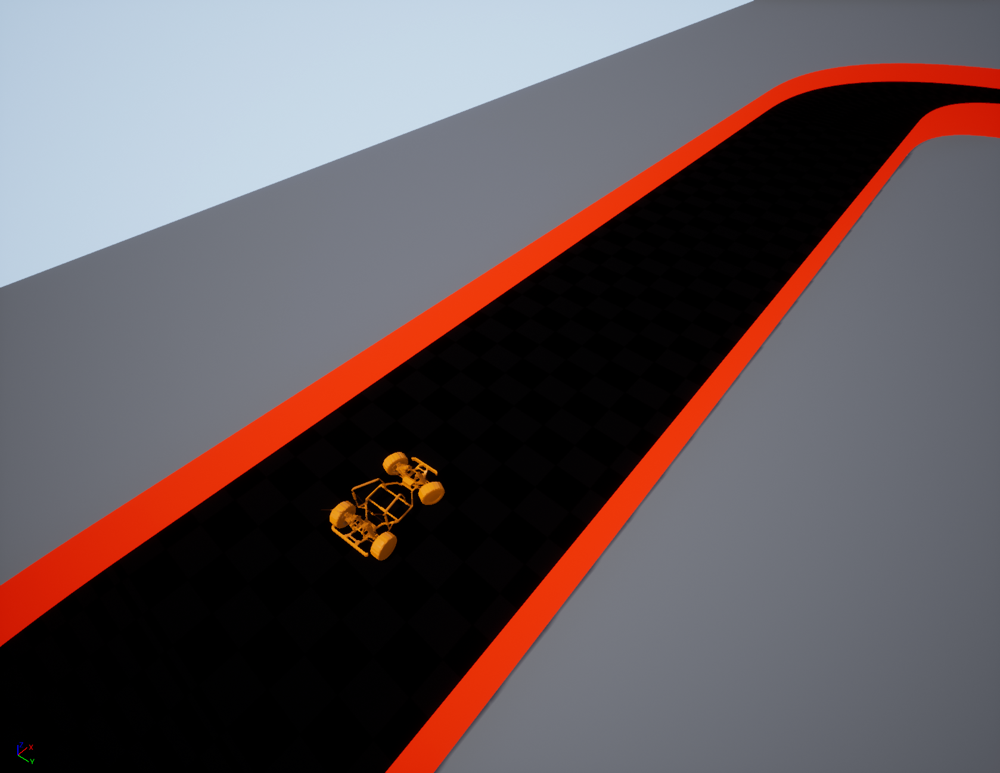
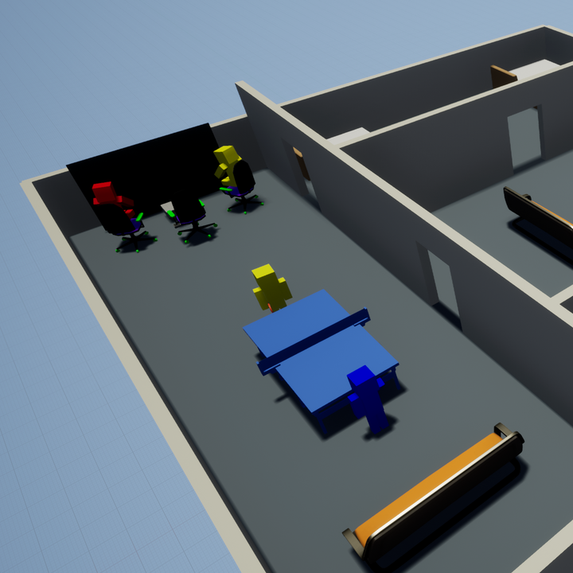

Hi, I'm Umberto.
Technical Game Designer with a MSc in Computer Science and professional training in Game Design. Fascinated with the game craft for its ways of surprising through discovery and fullfil our primal need for play — currently working on console portings at Untold Games.
Projects
Game Dev.

Co-development porting of the sequel to Squanch Games' flagship title for Nintendo Switch 2. Focus on stability, performance and bug resolution in close collaboration with QA.

Full porting of Squanch Games' award-winning FPS comedy game to Nintendo Switch and Switch 2. Extensive CPU profiling, optimization and platform-specific bug fixing across both hardware targets.

Nintendo Switch and Playstation 4 / 5 Port
Porting of Aesir Interactive's open-world police simulation game to Nintendo Switch. Bug fixing, performance work and a dedicated UI Design Document for Switch adaptation.

A side-scrolling puzzle platformer where you wake up as a mysterious child who can stop time. When time stops you move freely; when it flows, you channel forces to solve tests hidden in a lab facility.

Final thesis project in collaboration with startup AnotheReality. Designed a VR collaborative game for team-building and built a procedural tool to generate and test instances of desired difficulty using AI agents. Published in IEEE scientific journal.

Move your arrow through levels in a clean Japanese setting. Face increasing difficulty, defeat bosses and avoid civilians. Pierce only ninjas to score and unlock new skins.
A collection of games developed for various international jams and internal jam events at Untold Games. Key role in brainstorming, task management and hands-on development across all entries.

A neural network trained with neuroevolutionary techniques to drive a vehicle around a track without crashing. Built on UE4's VehicleAdvanced template with TensorFlow integration via plugin.

A personal deep-dive into Unreal's Behaviour Trees and Environment Query System. NPCs perform a realistic daily routine including solo and cooperative activities, then autonomously go to sleep at night.
I am a Technical Game Designer with a strong technical background stemming from a Master's Degree
in Computer Science and professional training at Digital Bros Game Academy.
I have a fascination with games that achieve depth through simplicity and thematic cohesion. My experience spans diverse genres, including action RPGs, shooters, deckbuilders, and racing games. Additionally, I love exploring simple yet clever indie titles such as Mewgenics, Inscryption, Outer Wilds, and Superliminal.
Naturally open-minded, focused, and always eager to learn.
Systems & Technical Game Design
Prototyping mechanics, writing Game Design Documentation, balancing systems through playtesting and iteration with a proven track record of leading and contributing to videogame projects.
Console Optimization & Porting
CPU profiling with Unreal Insights and Nintendo SDK tools, fixing platform-specific bugs, managing QA pipelines via Jira.
AI Design & Programming
NPC Behaviour Trees, EQS, Procedural Content Generation and Machine Learning applied to game experiences.
Hobbies and Interests
Devoted gamer reading books and articles about Game Design. Passionate about film and manga/comic, with a preference for strong artistic identities. Interest in Science especially Physics in which I excelled at.
07/2023
07/2020
Ongoing
11/2022
07/2020